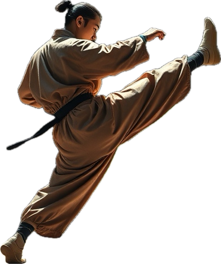
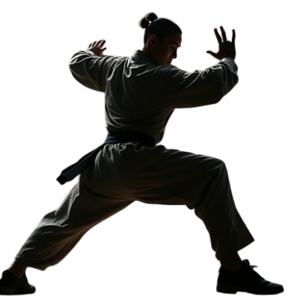

Learn Real Kung Fu with Masters of Authentic Lineage
At Koko-Kungfu Training Academy, we provide world-class training in traditional Kung Fu styles, taught by
experienced masters with authentic lineages. Whether you're a beginner or an advanced martial artist, we
offer training programs that help you grow, learn, and master the martial arts skills needed for both
physical and mental balance.
Our Mission
To offer professional, accessible, and immersive Kung Fu training that promotes physical fitness, mental
clarity, and martial arts mastery. Our goal is to empower individuals from all over the world with the
discipline, strength, and wisdom of Kung Fu.


Why Choose
Koko-Kungfu Training Academy
Authentic Training:
Learn from experienced masters with real Kung Fu lineages.
Comprehensive Programs:
Whether you're interested in Shaolin Kung Fu, Wing Chun, Tai Chi, or other styles, we offer diverse training programs.
Global Community:
Students from around the world come together to study Kung Fu and experience a cultural exchange.
Options:
We offer in-person and online training options to suit your needs and lifestyle.
All Skill Levels Welcome:
Whether you're a beginner or an experienced martial artist, we cater to all levels.
Kung Fu Styles
Kung Fu Styles We Offer
Shaolin Kung Fu
Shaolin Kung Fu is the foundation of all traditional Chinese martial arts. Our masters teach you the basic
techniques, forms, and philosophies that have been passed down through centuries. Training includes physical
conditioning, flexibility, and combat techniques.
Wing Chun Kung Fu
Wing Chun is known for its close-range combat techniques and practical applications. This system focuses on
speed, precision, and efficient use of energy. Learn from our Wing Chun masters who are disciples of the
legendary Yip Man.
Tai Chi (Tai Ji)
Tai Chi is a martial art known for its slow, graceful movements and deep focus on balance and breath. It’s
perfect for students seeking to improve their physical and mental well-being while learning the martial
art’s philosophy.
Training Programs
Koko-Kungfu
Introductory Level (1-4 Weeks)
Begin your martial arts journey by learning the basic techniques, stances, and movements. This level focuses on building physical conditioning, flexibility, and understanding the fundamentals of Kung Fu.
Basic Level (1-3 Months)
Strengthen your foundation with deeper training in forms and techniques. At this stage, you’ll develop more control over your movements and start practicing basic combat applications.
Intermediate Level (4-9 Months)
Develop your skills with more advanced forms, sparring, and applications. The intermediate level also focuses on improving speed, power, and precision.
Advanced Level (10-12 Months)
Master the techniques of your chosen Kung Fu style, learn complex forms, and engage in advanced sparring and self-defense. You will also learn deeper aspects of martial arts philosophy.